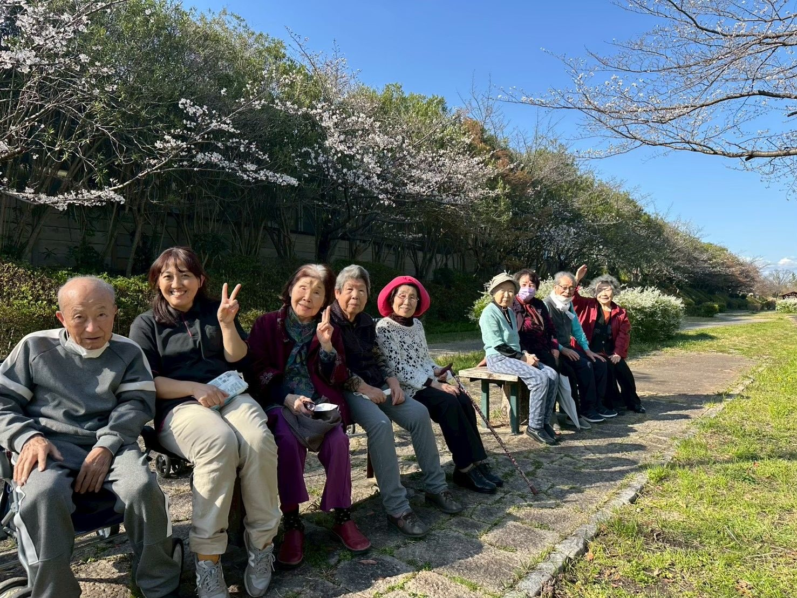
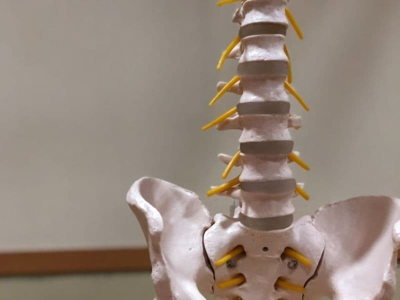
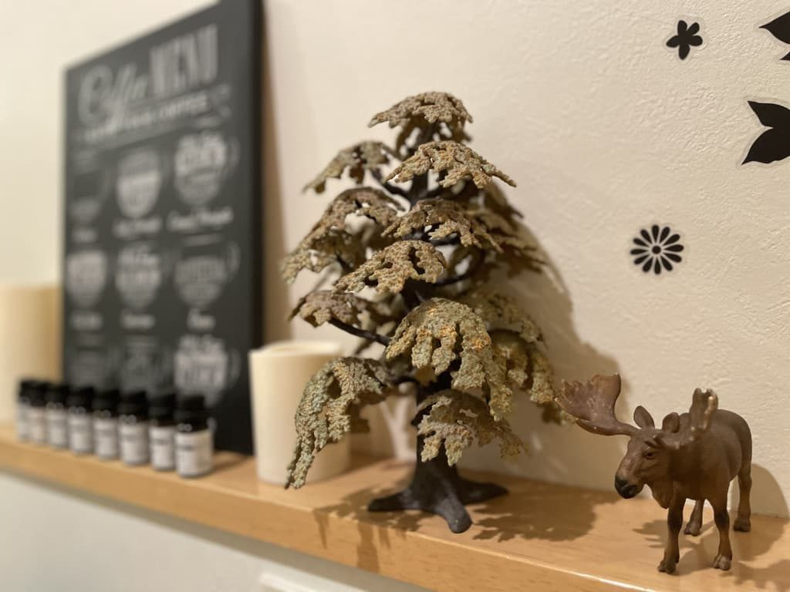
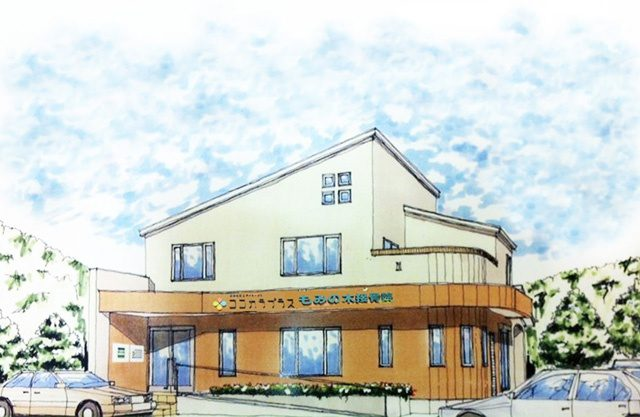

News
お知らせ
Our motto社訓
和顔愛語
やわらかな表情と、思いやりのある言葉で
About us
私たちのこと
体の痛みや衰えは、暮らしそのものを小さくしてしまいます。だから私たちは、体をみるだけでなく、その先の暮らしまで一緒に考えます。
もみの木接骨院から始まった「LIFE PLUS」。
痛みと向き合い、人生と向き合い、子供からお年寄りまで多くの人の心と身体に向き合ってきました。仕事としての接骨院、仕事としての介護事業という枠を超えて、その人の人生を支えたい想いを持って私たちはここにいます。これからも地域の方の「当たりまえの毎日」を縁の下で支える存在になりたいと考えています。
Services
3つの事業

Day service
ココカラプラス
機能訓練型デイサービス（地域密着型通所介護）機械よりも人の手で。おひとりおひとりの体に合わせた機能訓練で、ご自宅でも続けられる運動を一緒に。
くわしく見る
Bone-setting clinic
もみの木接骨院
ケガ・交通事故骨折・脱臼・捻挫・打撲・挫傷は健康保険で。交通事故のケガは自賠責保険で施術を受けられます。
くわしく見る
Body care studio
HIROボディケアスタジオ
慢性の腰痛・肩こり（保険外）くり返す痛みには、くり返す理由があります。トリガーポイントと筋膜、毎日の食事まで、体をまるごと見直します。
くわしく見るApp development
介護の現場を、
テクノロジーで支える。
デイサービスを営む私たちが、自分たちの現場で使いながら、介護施設向けのソフト「TASUKARU（タスカル）」を作っています。
アプリ開発についてRecruit
一緒に働きませんか
デイサービス・接骨院で、いっしょに働く仲間を募集しています。
Reservation & Contact
ご予約・お問い合わせ
Access
アクセス
愛知県豊田市丸山町
7丁目49番地6
〒471-0832。デイサービス・接骨院・ボディケアは同じ建物です。駐車場は8台（障害者用スペースを含む）。

- 会社名
- 合同会社LIFE PLUS
- 代表
- 岸本 洋幸（柔道整復師）
- 設立
- 2014年11月
- 事業内容
- 機能訓練型デイサービス（地域密着型通所介護）／接骨院／ボディケア／介護施設向けソフト「TASUKARU」の開発・提供
- メール
- お問い合わせフォーム